Libros de relatos de vida y psicología narrada
Libros de relatos de vida y psicología narrada en español: 48 libros completos para leer gratis aquí mismo y 68 fichas de títulos actuales.


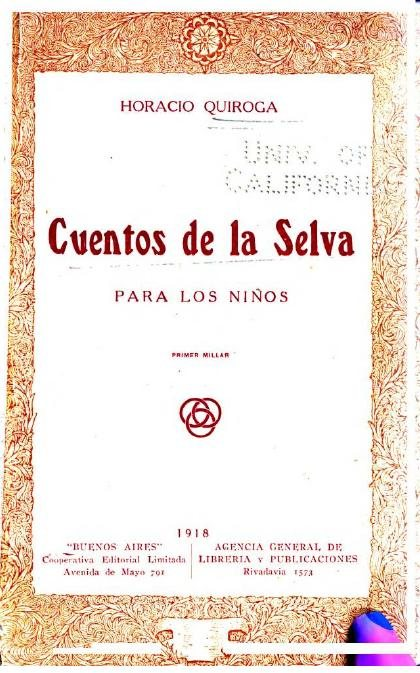
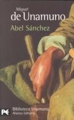
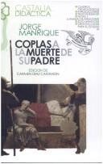
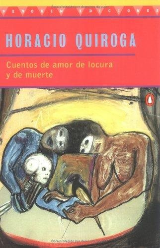
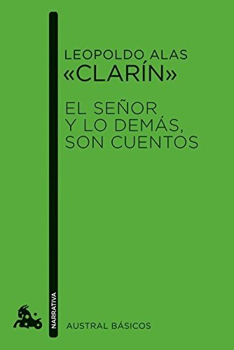

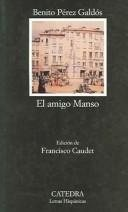
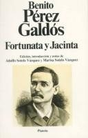
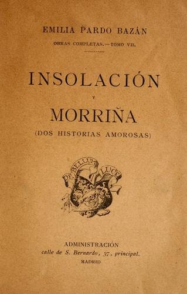
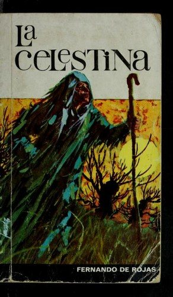
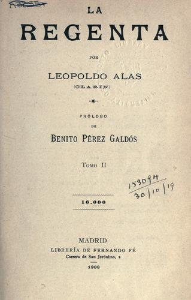
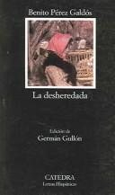
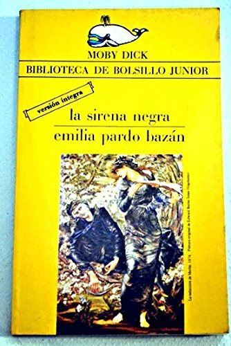
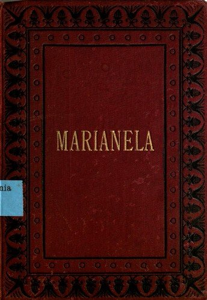
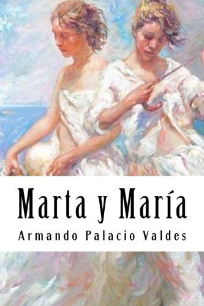
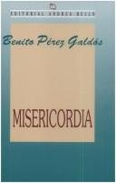
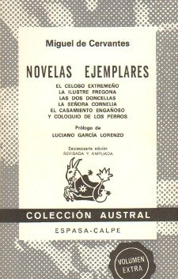
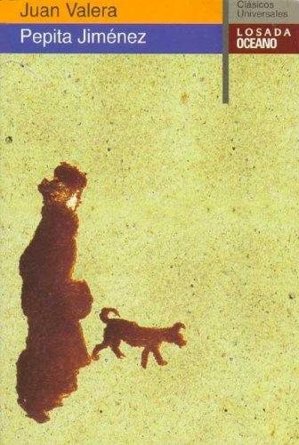
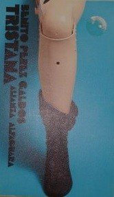
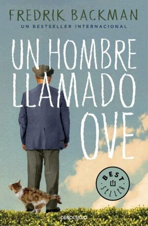


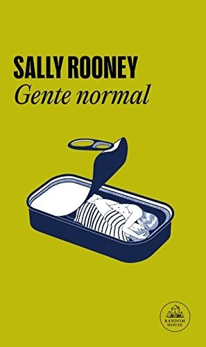
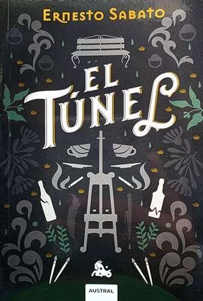
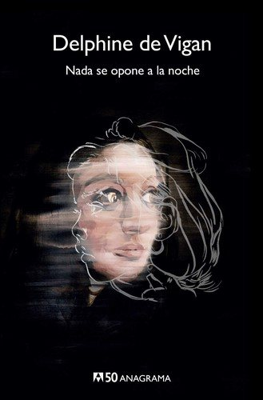

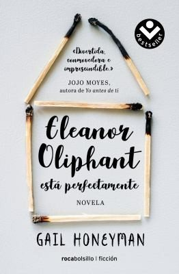
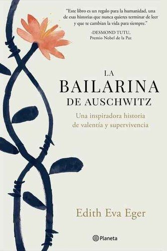


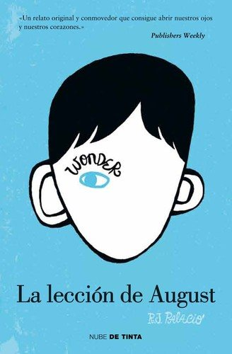
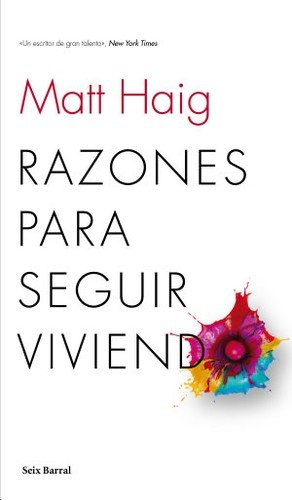

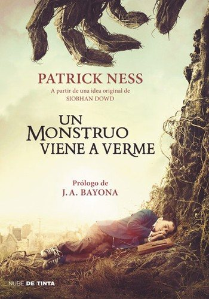
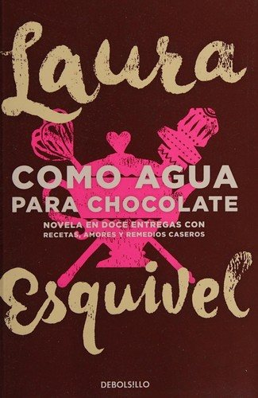

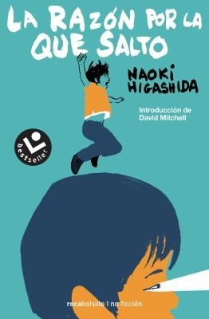

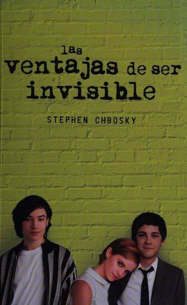
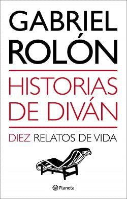


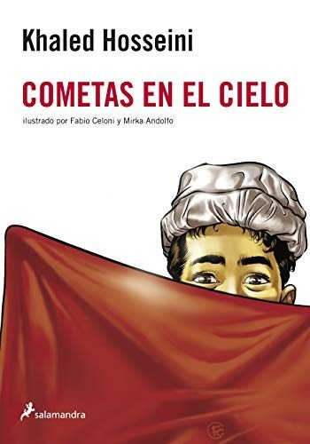
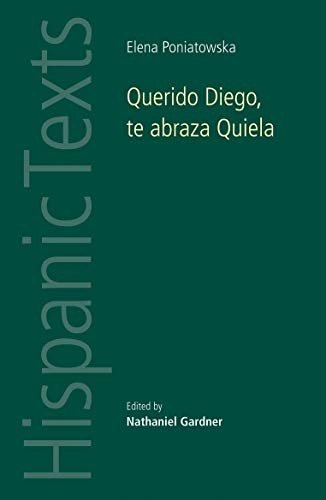
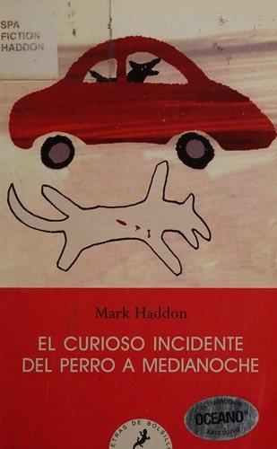

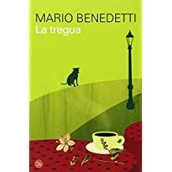

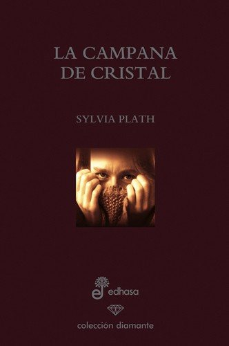


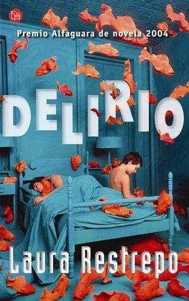
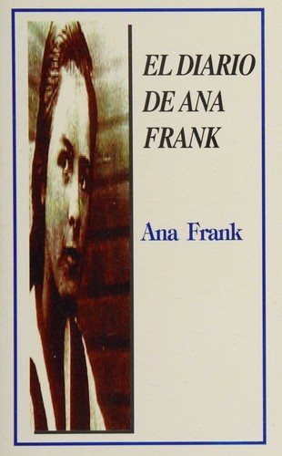


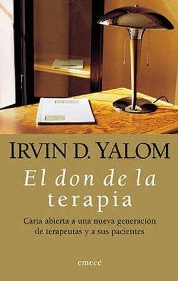
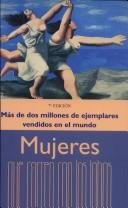

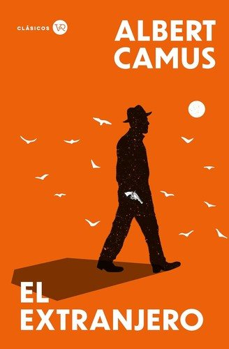


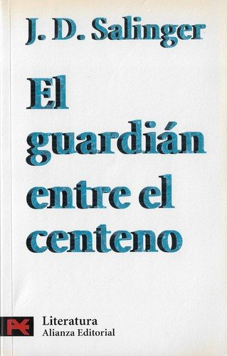


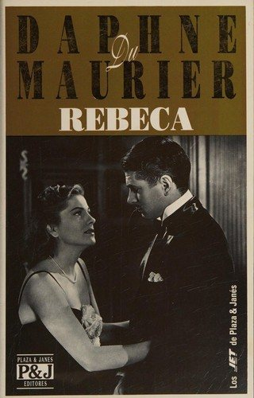

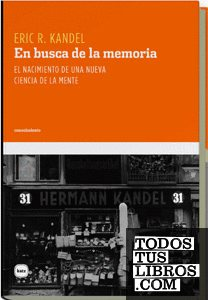

¿Estás eligiendo carrera?
Haz gratis el test de orientación vocacional de AURZANE: intereses, aptitudes, autoconcepto y hábitos de estudio, con informe completo.